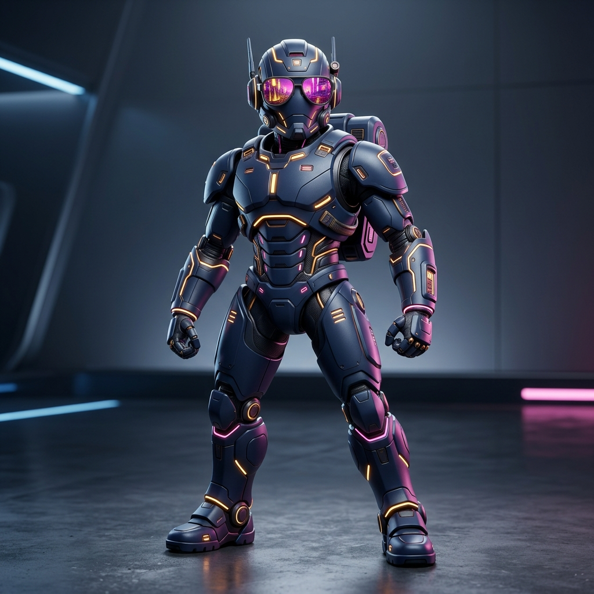

DRIVE YOUR CAREER &
ENTERPRISE FORWARD.
Solutions Architect & |
12+ years of experience delivering enterprise RPA & Agentic AI automation across BFSI, Healthcare, and Retail. **Delivered UK based Bank automation impacting 2M+ customers and achieving £450K+ annual savings.** Based in Bengaluru ⛅.
Explore your organization growth with Ramannjneyulu
Your centralized cockpit for professional evolution. Map your trajectory, bridge skill gaps, and connect with global enterprise teams.
"Peace comes from within. Do not seek it without. Excellence is a continuous habit of enterprise innovation and delivery mastery."
Still managing tasks? Choose Strategic Leadership.
Upgrade from routine checklist management to a Solutions Architect & Technical Program Lead who turns complex tech into enterprise ROI.
Why I Am Special: Strategic Vision Over Daily Tasks
Managing tasks is standard—driving strategic alignment, high-impact architecture, and 18-member delivery governance is what makes the difference.
Agentic AI & Scalable Bot Ecosystems
Certified Forward Deployed Engineer (FDE) with end-to-end expertise in Model Context Protocol (MCP), Agentic AI routing, and 30+ enterprise production bots.
My Value Proposition: The 5-Step Story
Click the navigation tabs or use the controls below to navigate through my executive pitch deck.
Core Skills & Expertise
Agentic AI & Gen AI
Designing next-generation intelligent agent systems, API routing, and RAG architectures.
Automation Ecosystems
Twelve years of architecting scalable RPA solutions, deploying 30+ bots, and cognitive extractions.
Technical Program Leadership
Directing 18-member teams, Agile execution, product backlog grooming, and stakeholder alignment.
Key Transformation Deliverables
UK based Bank Statement Automation
Delivered high-impact paperless statement automation program impacting 2M+ customers and achieving £450K+ in annual cost savings through process optimization and reusable automation frameworks.
Enterprise Agentic Framework (EAF)
Architected enterprise database integrations utilizing EAF and Model Context Protocol (MCP) to deploy secure AI agents governed by Policy as Code compliance rules.
30+ Production Bots & Reusable Framework
Designed and deployed 30+ production-grade bots utilizing Automation Anywhere A360, UiPath, and Workato across finance, operations, and reporting functions.